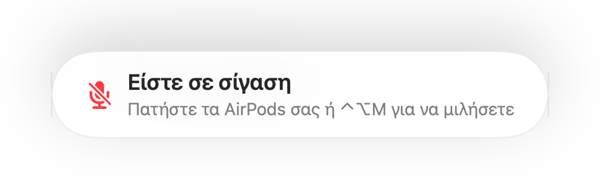

Υπενθύμιση «Είστε σε σίγαση» για κάθε app κλήσεων
Το Zoom σας προειδοποιεί όταν μιλάτε ενώ είστε σε σίγαση. Οι περισσότερες άλλες εφαρμογές όχι, και οι διαδικτυακές κλήσεις σχεδόν ποτέ. Εξηγείτε κάτι για ένα λεπτό και μετά διαπιστώνετε ότι όλοι περιμένουν.
Το Muffle ανιχνεύει ομιλία ενώ είστε σε σίγαση και εμφανίζει μια υπενθύμιση, σε οποιαδήποτε app. Όταν η κλήση χρησιμοποιεί AirPods ή ακουστικά, ακούει το ενσωματωμένο μικρόφωνο του Mac σας και μόνο την ένταση του ήχου. Δεν καταγράφεται τίποτα.
Δοκιμάστε το Muffle δωρεάν για 3 ημέρεςΣύντομα στο Mac App Store
Ενεργοποίηση της υπενθύμισης
- Εγκαταστήστε το Muffle και επιτρέψτε την πρόσβαση στο μικρόφωνο.
- Βεβαιωθείτε ότι η επιλογή «Να μου υπενθυμίζεται όταν μιλάω ενώ είμαι σε σίγαση» είναι ενεργή στις Ρυθμίσεις Muffle.
- Συνδεθείτε σε μια κλήση με AirPods ή ακουστικά και θέστε το μικρόφωνο σε σίγαση.
- Αρχίστε να μιλάτε. Εμφανίζεται η υπενθύμιση «Είστε σε σίγαση».

- Συνδέεστε σε μια κλήση ενώ είστε ακόμα σε σίγαση από την προηγούμενη; Το Muffle σας το υπενθυμίζει μόλις ξεκινήσει η κλήση.
- Η πληκτρολόγηση δεν ενεργοποιεί την υπενθύμιση. Μόνο η συνεχής ομιλία την ενεργοποιεί.
Ερωτήσεις
Λειτουργεί η υπενθύμιση με το ενσωματωμένο μικρόφωνο του Mac;
Λειτουργεί όταν η κλήση χρησιμοποιεί AirPods ή ακουστικά. Αν η κλήση χρησιμοποιεί το ίδιο το μικρόφωνο του Mac, αυτό το μικρόφωνο είναι σε σίγαση και δεν μπορεί να σας ακούσει.
Καταγράφεται ο ήχος μου;
Όχι. Το Muffle μετρά μόνο την ένταση και δεν αποθηκεύει ούτε στέλνει ποτέ ήχο.